Let’s record ourselves saying a “good day, good afternoon” greeting in whichever language you would like
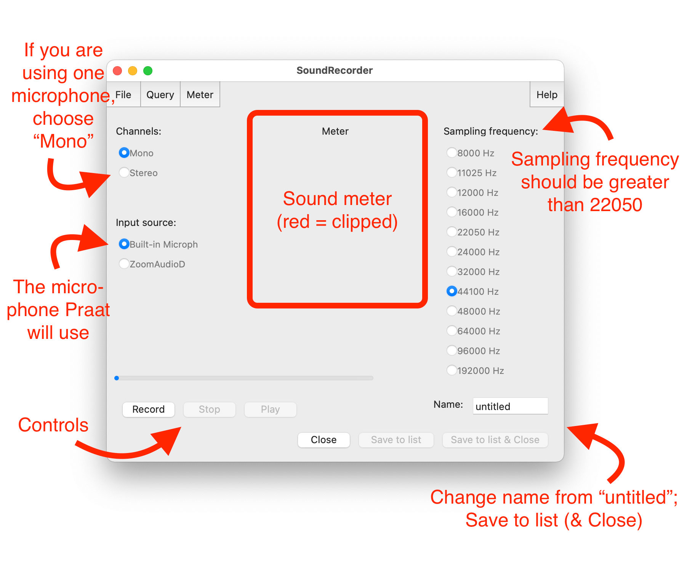
Make sure you “save to list” before closing the recorder!
Stored sound
You should now have a Sound in your objects window
Select the Sound object and a menu will appear to the right
Click “Play” to hear your sound
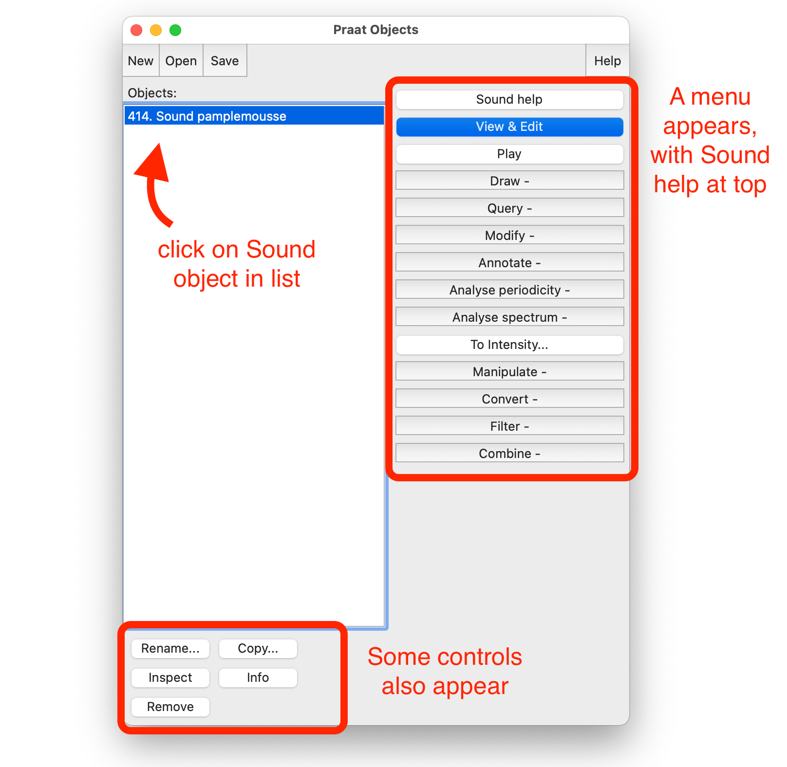
Saving your recording
We’ll end this by saving our work as a .WAV file (the standard format for phonetics work)
The file is not yet saved, only stored in Praat
If you close Praat without saving the file, it will vanish
Importing a sound file
We might also import sounds which have already been recorded
Download this ZIP file (673 KB), which contains all of the files we’ll use
Use the “Open” dialogue to open bbk-hills-of-bushes.wav
That file contains one utterance of Babanki “hills of bushes” from Faytak & Akumbu (2021)
Making and using TextGrids
Viewing a sound file
We’ll start by viewing Babanki “hills of bushes”
Select the Sound and click “View and Edit” in the right menu
Viewer window has button and keyboard controls
Select by clicking, SHIFT-clicking, or clicking and dragging in sound
Press TAB to play selected sound, or click bar below window
Control buttons (zoom in, zoom out, scroll) are at lower left
Keyboard shortcuts: CTRL+ (PC) or Command+ (Mac)…
A: zoom out to all
N: zoom to selection
I: zoom in
O: zoom out
We may wish to know where the words and segments are, but we lack useful landmarks at this point
Each “blob” is a syllable
No indication of tones (yet)
Making a TextGrid
TextGrids are one of the most useful features of Praat: annotate and organize your audio files
Using the menu as shown below, we’ll make a TextGrid for our Babanki sound object
Interval tiers
Let’s use the interval tier “sentence” and use it to transcribe the utterance
Contains a list of ranges in time separated by boundaries
Useful for marking off words, utterances, and some vowels and consonants
Here, click before the beginning and after the end of the utterance, then type a transcription or translation in the middle
Point tiers
Let’s use the point tier “stop” to mark off where each [t] release happens
Contains a list of points in time
Useful for instantaneous events
Note that intervals are generally more useful for most segments
Can’t click and highlight range like interval tier
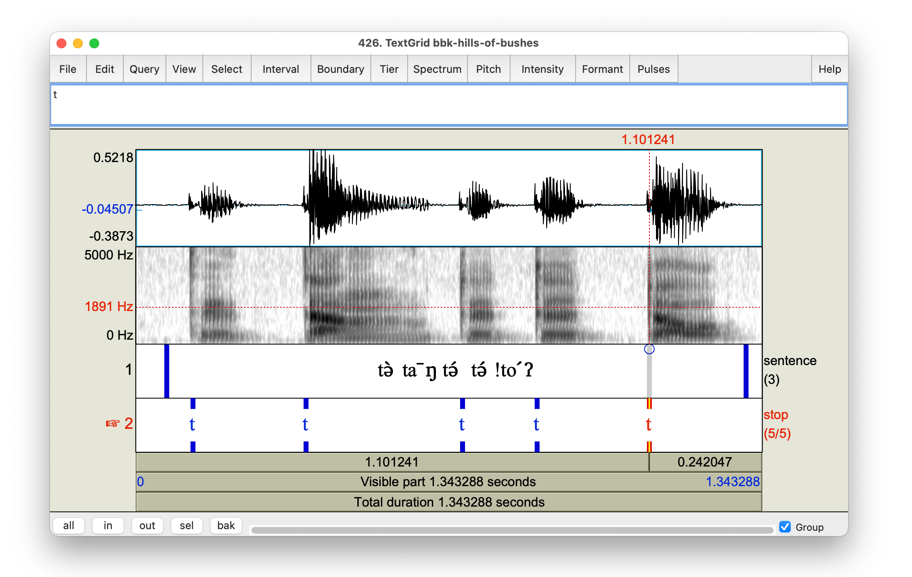
Adding and removing tiers
We might be dissatisfied with how the tone marks are displaying; we could make a new tier for tones (autosegmental style)
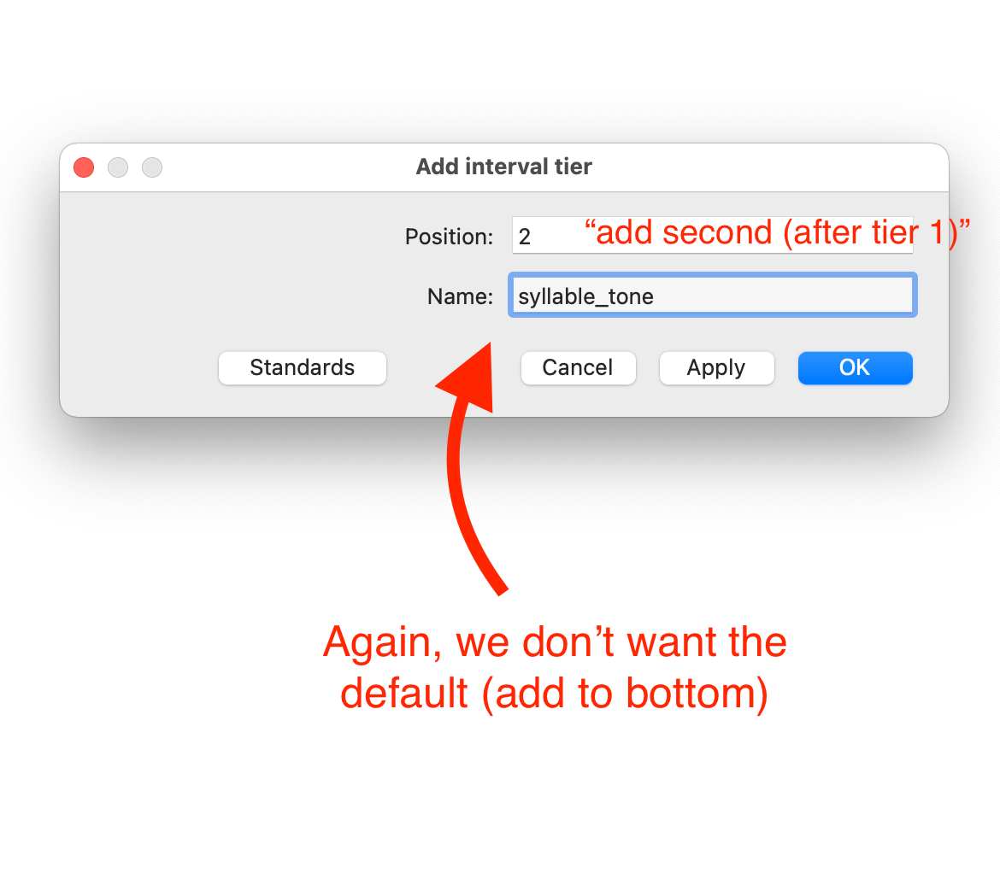
Amending the TextGrid using the new tier:
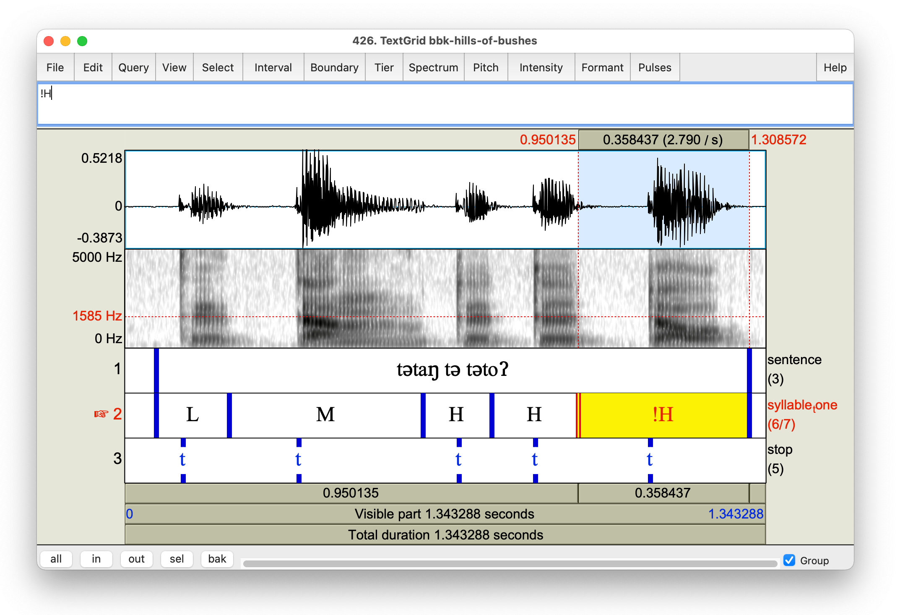
Saving TextGrids
Using CTRL+S or the menu shown below, you must save your TextGrid when you are done
If you close Praat without saving your TextGrid, it will vanish
Much like recorded audio files which are stored in the object list
Reading our data
Data displays
We may wish to provide further details in our TextGrids, but we encounter another problem here: how to interpret the data?
Praat shows waveforms and spectrograms
Note the simpler TextGrid (segments, tones); bbk-hills-of-bushes.TextGrid in downloaded files
Waveforms
Waveforms show sound pressure (the pressure that sound waves make on the microphone) versus time
We expect any voiced speech signal to oscillate because the vocal folds open and close in a repeating pattern
Other voiceless sounds show no movement away from “zero line” and no clear oscillation
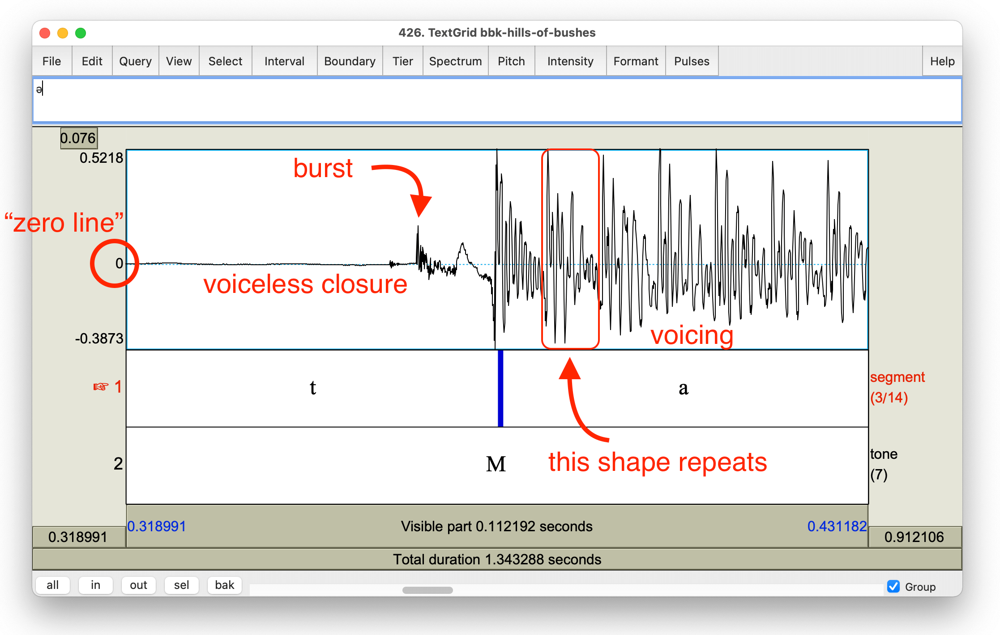
Sonority
Sounds produced with a more open mouth are louder and more sonorous Parker (2008) ; these are thicker on the waveform
Spectrograms
We can also show the spectrogram for our recording
Breaks down our waveform to give us information about the sound spectrum and where its energy is (high or low frequency)
Spectrograms are three-dimensional, and show time vs. frequency vs. sound pressure (color)
The darker the spectrogram (and the thicker the waveform), the more sound pressure there is
Think of it as an elevation map (Mt. Cameroon pictured)
Interpreting spectrograms
Vowels, semivowels, and approximants have characteristic striping, horizontally and vertically
Voicing is visible as vertical stripes in vowels, and as a small “bar” at bottom
Formants are clear horizontal bands above the voicing bar
Interpreting spectrograms
Nasals look somewhat like vowels, with “smudged” formants and less energy (darkness)
Due to the opening of the velum: nasal cavity “muffles” the sound
Much like soft objects in a room muffle echo
Interpreting spectrograms
Fricatives have high-frequency or low-frequency noise
Dark irregular smudges across entire areas of spectrogram
The further back the fricative, the lower the average frequency
Compare [s] and [ʒ]: [s] is further front, has higher frequency, sits higher on spectrogram
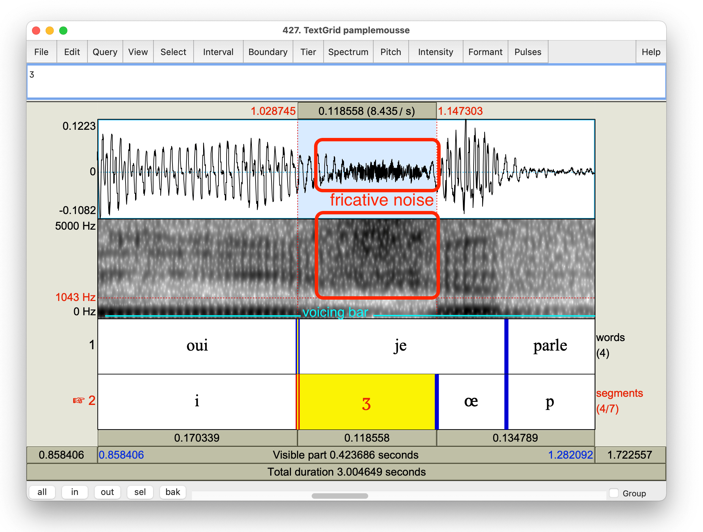
Interpreting spectrograms
Stops show an absence of (most) energy followed by a burst across the whole spectrum
Affricates look similar, but as if they were followed by a fricative
From Babanki [kə̀dʒóm] ‘Babanki’ Faytak & Akumbu (2021)
Prenasalized segments
Prenasalized stops and affricates often have a long nasal closure followed by a short oral closure which we can see clearly in the spectrogram
Note the “smudged” energy goes away when oral closure begins in [ⁿpfʲ] below
From Babanki [kə̀ⁿpfʲɨ́ŋ] ‘owl’ Faytak & Akumbu (2021)
Drawing figures
Why make figures?
Figures are an easy way to present a small amount of phonetic data in scientific papers
Give support to phonological judgments
Support particular transcriptions
Provide more detail for any especially unusual sounds or sound contrasts
This section: professional-looking and informative data displays
Picture window
Waveforms and spectrograms can be “drawn” or “painted” (respectively) in the picture window
This also opened when you open Praat; we’ll stop ignoring it now
The blue rectangle indicates the plot area where the figure will be drawn: change size by clicking and dragging as needed
Drawing a waveform
“Draw” (in the object window) is for any line-based drawings, including waveforms
Select a Sound to draw its waveform
The result: a waveform drawn within the plot area
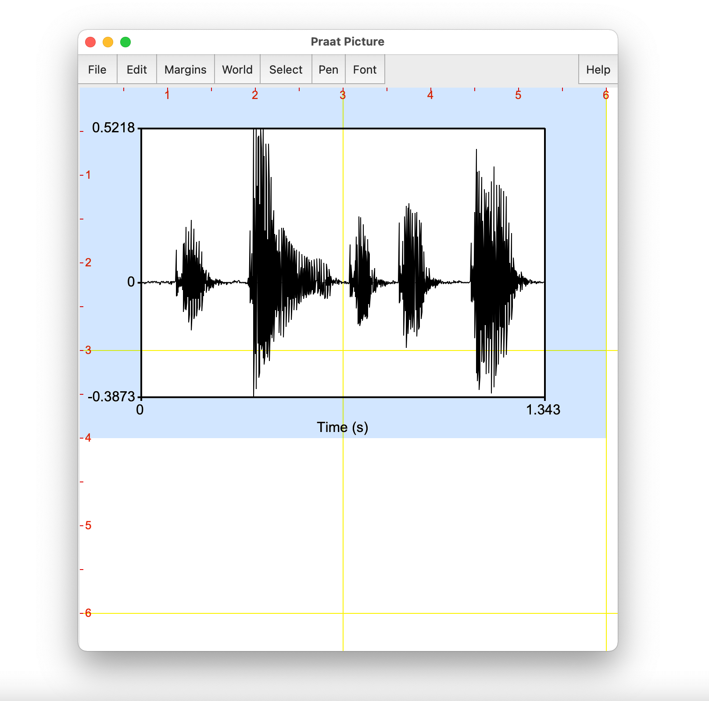
Drawing a TextGrid
TextGrids can be drawn as well, using the same menu as Sounds
By default, they appear with an empty space above them
Combining TextGrids and waveforms
A Sound and TextGrid can be drawn together very easily: simply select both and choose the Draw menu as before
Adds TextGrid annotation to the waveform drawing
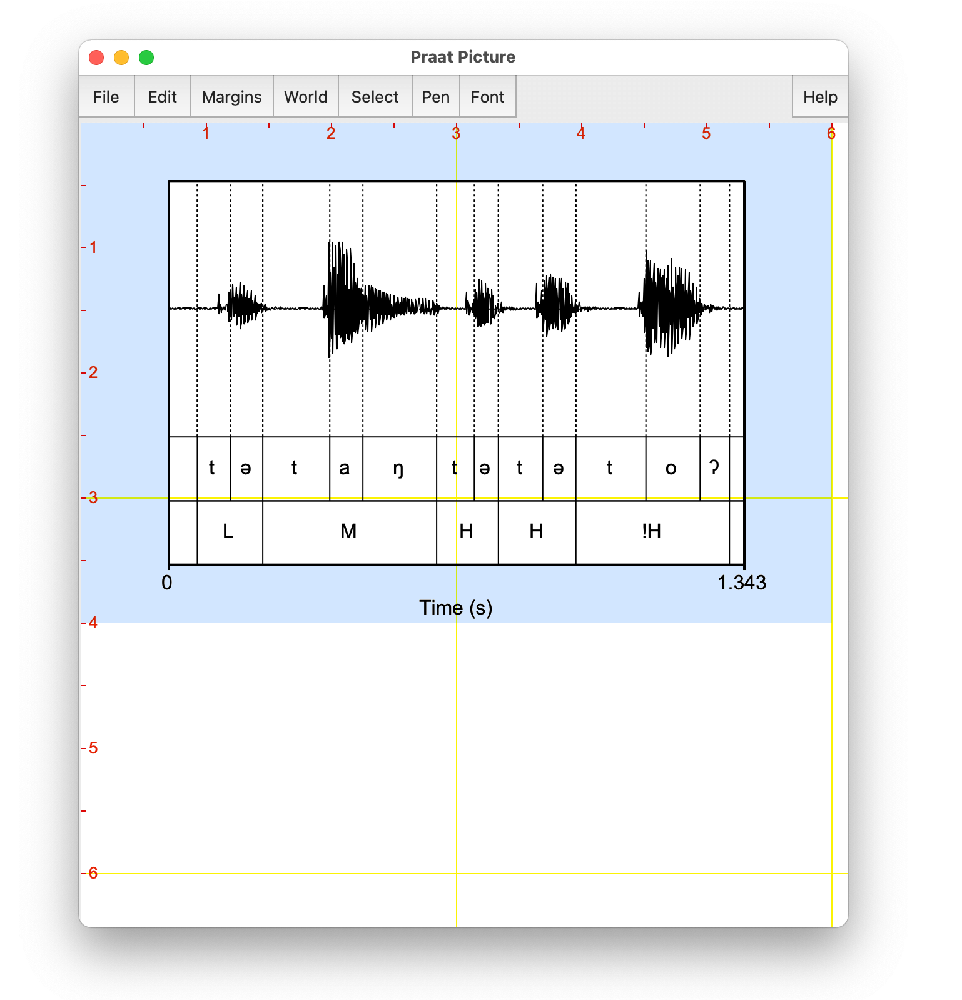
Extracting a spectrogram
“Paint” is for drawing spectrograms and other objects, but: we need the right object to do this
Select Sound and click “View and Edit”
Select from the Spectrum menu “Extract visible spectrogram”
Painting a spectrogram
This sends a Spectrogram object to the object list; when we select this we get a “Paint” option under Draw
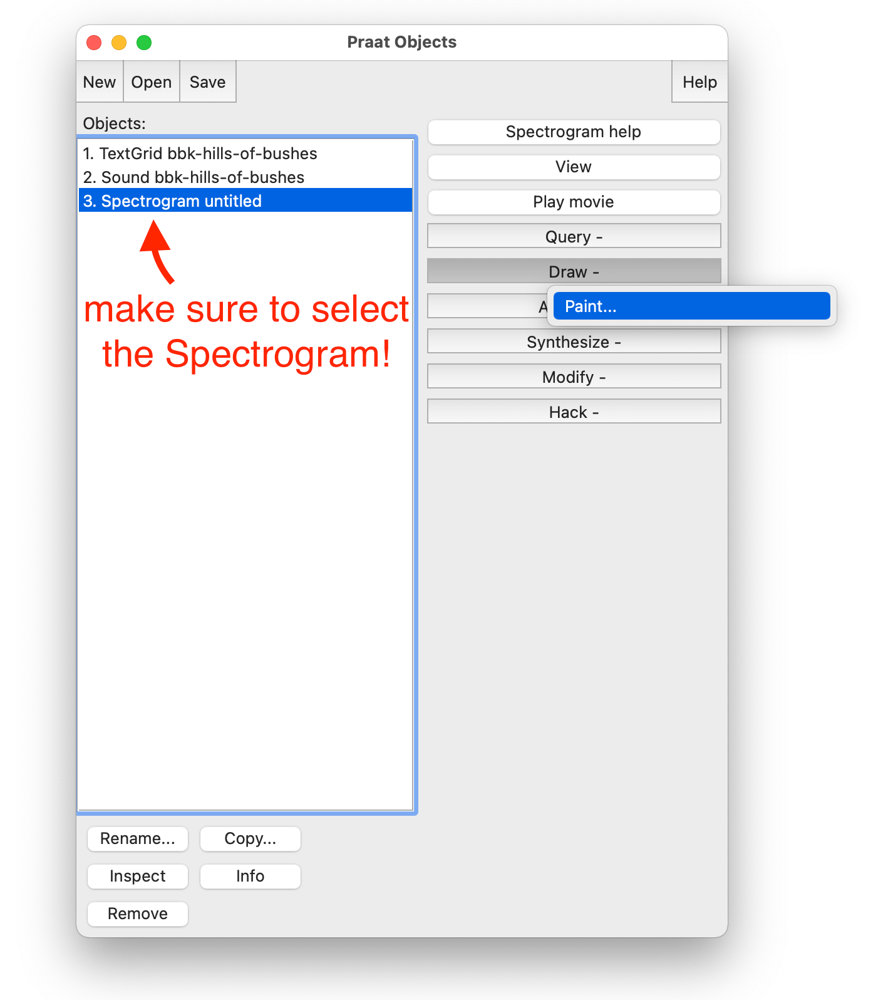
The result: as expected, but a bit too tall for its width (make plot area wider/shorter)
Spectrograms and TextGrids
Drawing a spectrogram and a TextGrid at the same time is a bit more complicated
Paint the spectrogram, but uncheck “Garnish”
Add the Y axis marks using the “Margins” menu
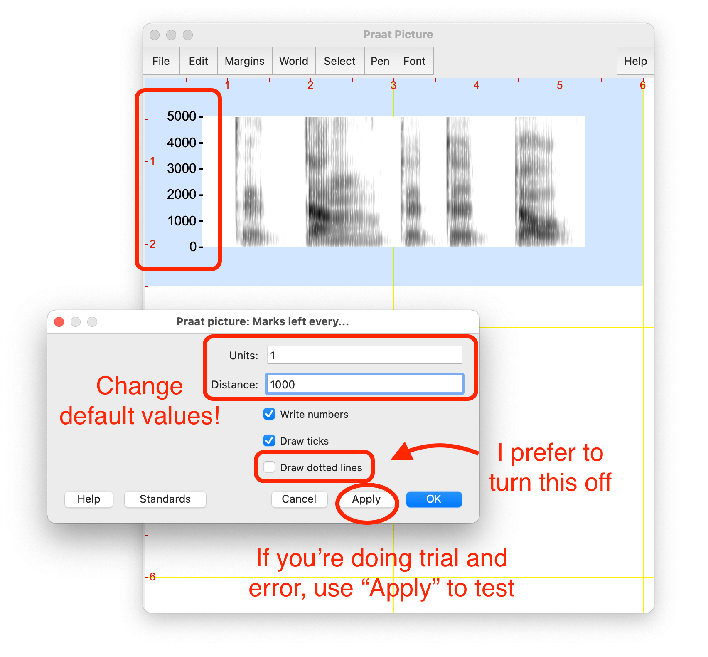
Add a Y axis label, usually “Frequency (Hz)”
I’ve also added a box around the plot here with “Margins” > “Draw Inner Box”
Spectrograms and TextGrids
Resize plot area to be taller than spectrogram (pictured), and Draw the TextGrid
The result: TextGrid annotations on top of the spectrogram
Saving
As with everything else in Praat, you must save before closing the picture window or you will lose your work
If you don’t keep the plot area in the same place (covering your figure or margins), you won’t save the entire figure
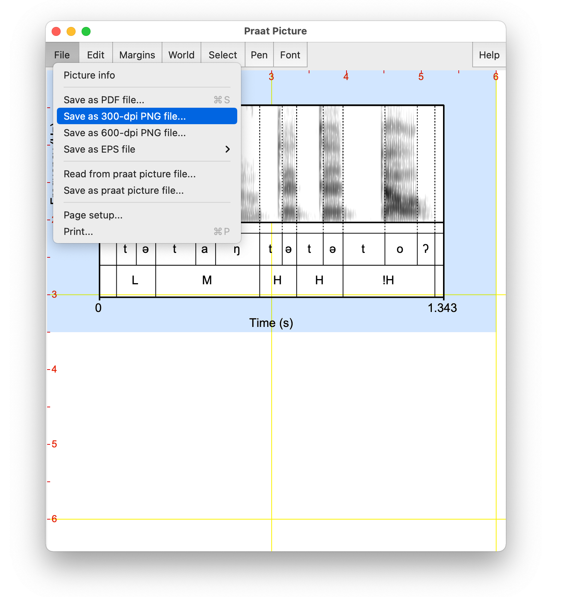
Measuring phonetic properties
Why numerical measurements?
Now we’ll turn to taking numerical measurements in Praat
Actual calculation
Displaying figures of these measurements
Storing measurements as tabular data (at the end)
More than showing an entire sound file as a waveform or spectrogram, focusing on a specific phonetic property can be useful
Make a figure for this specific property
Focus on topic of interest for your discussion
Display with a TextGrid, a waveform, etc.
Why numerical measurements?
Also lets us measure many utterances and summarize, which also allows us to handle phonetic variation
Languages differ in their phonetic implementation of the “same” segments
Speakers of the same language produce it differently depending on their history, social stance, etc
Even phonologically identical words can differ slightly phonetically Gahl (2008)
Because of this it’s best to collect many observations and average or model the data to remove noise and variation
Multiple speakers
Multiple repetitions
Multiple words
Duration
One of the simplest measures: duration of segments or words
Simply ending time of the interval minus its starting time (t2 − t1), in seconds
Two ways to acquire this in Praat:
Displayed in viewing window when you select an interval
If you use the “Query” menu, a text box appears which you can copy-paste the value from
Practical use
Duration of segments, subsegments
Laryngeal contrasts (how long is aspiration of stop), gemination, vowel length, etc.
Pius data?
Pitch (fundamental frequency, f0)
Turn on “show pitch”; query pitch (f0)
Practical use
f0 signals pitch (tone) - all sorts of phenomena
Downstep, downdrift, pitch reset, lexical tone contrasts, intonation, etc
intensity is useful for a range of properties (cons lenition, stress, etc)
Pius example:
Change defaults to 70-140 Hz to reflect speaker’s pitch range
Intensity
Exactly parallel for intensity
Practical use
Pius examples
f0 and intensity figures
f0 and intensity tracks can be added to figures
Best to put above/below a spectrogram or waveform
Shown below: pitch contour
Formant frequencies
Formant frequencies provide vowel quality and other contrasts
F1 inversely relates to height
F2 inversely relates to backness
F3 directly relates to retroflexion, etc.
Formant transitions; lateral and nasal quality, etc.
How to
Turn on “show formants”
Query formant listing
Formant estimation
Unlike the other measures, formant estimation often requires calibration to individual speakers
Speakers with low f0 need different settings compared to speakers with higher f0
Children (with very high f0) can be especially difficult
Often, different settings are needed for front and back vowels (especially back rounded vowels)
Adjust ceiling, adjust number of formants
Formant figures
Formants work best in an F1-F2 plot (which is not made in Praat), but formant tracks can be drawn like any other measure
Voicing (“Pulses”)
Voicing report
Practical use
Tabular data
The way numerical measurements are stored is important: store as tabular data (i.e. spreadsheets)
One observation (time point, tone, segment, etc) per row
One measure per column
Can have multiple measures per time point
Name columns using the first row
Use more columns to provide other background information (speaker’s ID, segment or word, experimental condition, etc)
Can use Excel or Google Drive (.xls, .txt, or .csv format)
Manually building the tabular data in Excel is slow, but it works and requires no new skills
Google Sheets provides a free alternative to Excel, but data transfer might be expensive
Praat scripting can quickly produce tabular data, but some new skills required, beyond the scope of this tutorial
Example
…
how to paste easily? Praat adds three spaces (instead of a tab) between measurement columns, so each row is read as a single string
Google Docs can get around this:
References
Faytak, M., & Akumbu, P. W. (2021). Kejom (Babanki). Journal of the International Phonetic Association, 51(2), 333-354. Article
Gahl, S. (2008). Time and Thyme Are not Homophones: The Effect of Lemma Frequency on Word Durations in Spontaneous Speech. Language 84(3), 474-496. Article
Ge, C., Xiong, Y., & Mok, P. (2021). How reliable are phonetic data collected remotely? Comparison of recording devices and environments on acoustic measurements. In Proc Interspeech 2021, 1683-1687. PDF
Hyman, L. (2014). How to study a tone language. Language Documentation & Conservation, 8, 525-562. Article
Parker, S. (2008). Sound level protrusions as physical correlates of sonority. Journal of Phonetics, 36(1), 55-90. Abstract
Sanker, C., Babinski, S., Burns, R., Evans, M., Johns, J., Kim, J., Smith, S., Weber, N., & Bowern, C. (2021). (Don’t) try this at home! The effects of recording devices and software on phonetic analysis. Language, 97(4), e360-e382. PDF
Zee, E. (1981). Effect of vowel quality on perception of post–vocalic nasal consonants in noise. Journal of Phonetics, 9(1), 35-48. Abstract


 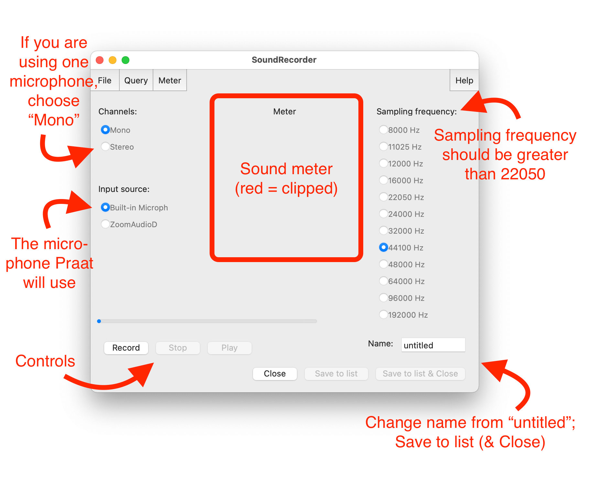
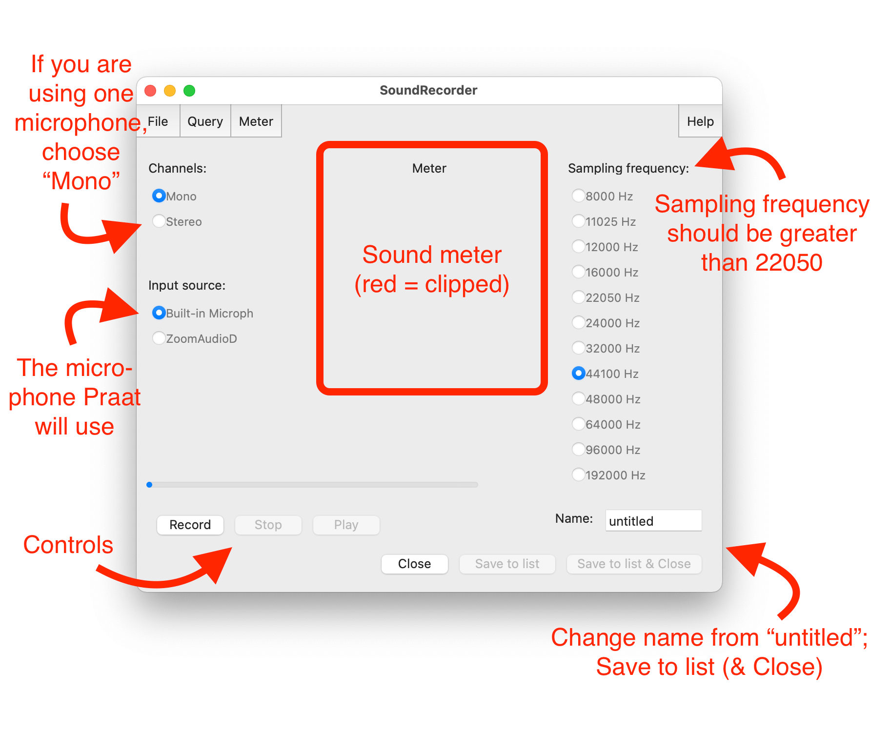


 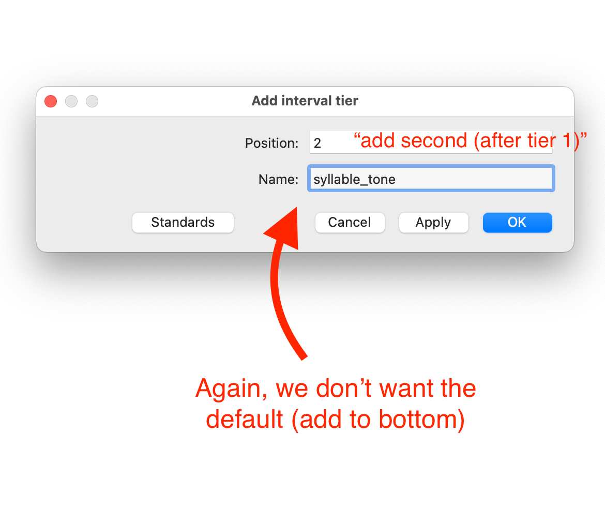
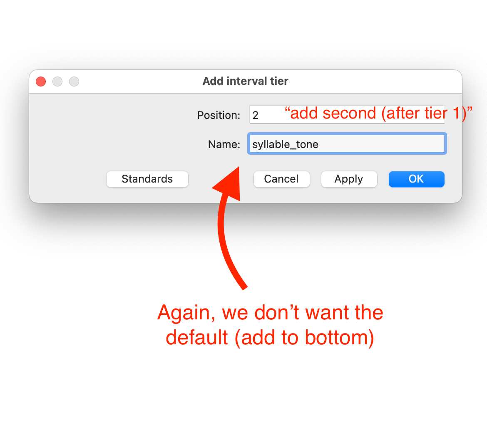


 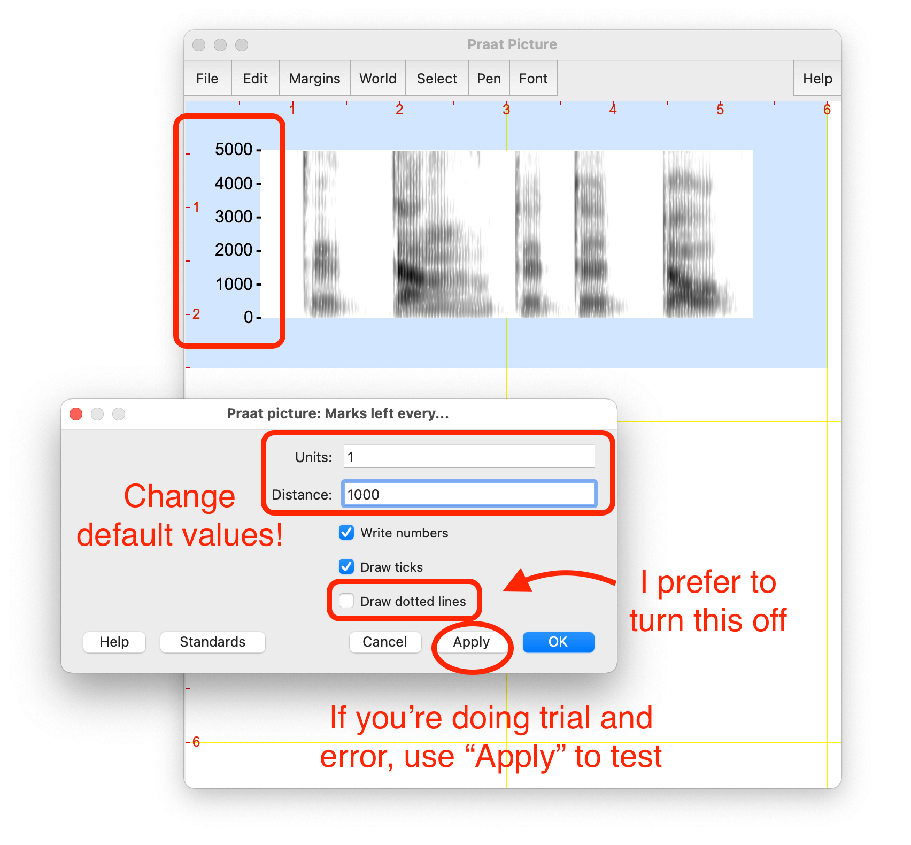
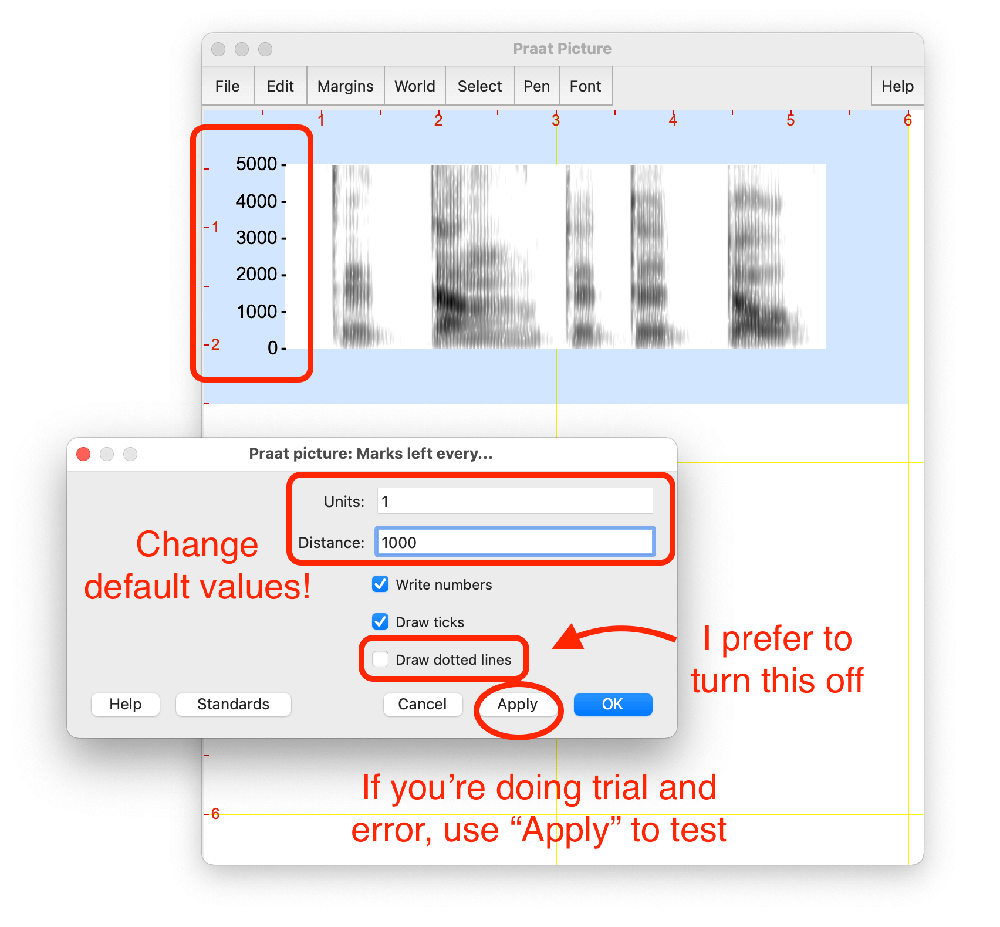